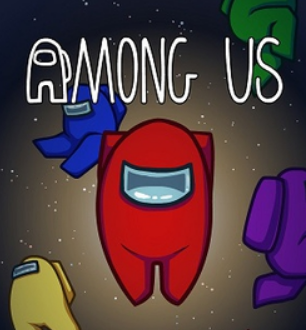
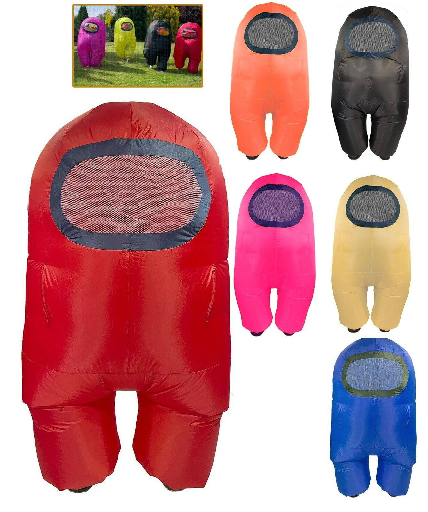

 To many people's surprise, the game was actually released 5 years ago under the name "spacemafia". It was relatively unknown, only reaching around 50 players every day. Although development staerted a year prior, there really wasn't much content present. Players could only walk around a single map, killing other players. Over time, the developers found this style of gameplay extemely stressful and inefficient. This led to improvements on the task system, making it a crucial part of Crewmate gameplay but removing the Impostor's ability to do them. The original game featured no audio, as well as no option for cross-platform gameplay. This is one of the main factors for why it didn't do that well, as people easily lost interest. They didn't find the game immersive or worth their time.

It wasn't until 2020 that the game got serious popularity. Content Creators all over the world somehow found this unkown game
and started sharing gameplay with their audiences. This encouraged everyone to download the game and start playing, resulting
in thousands of active players at a time. This resulted in the highest numebrs Among Us have ever seen, peaking at around 137 Million
players. This sparked one of the largest populatirty booms of all time. The internet was flooded with Among Us content,
memes were everywhere, it seemed like every single person was connecting their life to this video game in some way (see Meme Culture for more information).
There were events amd conventions, even people cosplaying as "Impostor from Among Us". People thought this game wouyld never die.
<---- Some Among Us cosplays
Although the game seemed to be going strong for around a year at this point, all games are bound to "die". This happened to Among Us a lot sooner than people expected. By the start of 2022, people were referring to Among Us as a "dead game". People were starting to turn away. The Among Us team tried to fix this by releasing constant updates to gameplay and UI menus. Content creatiors were trying their best to bring their audiences back to this game. Unfortunately, nothing seemed to work. People were just not interested. This is the same problem the developer team had at the very start of the game's release.
The hype for Among Us has basically gone. It's still a piopular game, just not nearly as much as before. Currently, it's mainly used as meme material. People can
always turn to Among Us to make a stupid, low-effort internet joke while getting tons of likes.
The developers haven't given up, however. They continue to release updates, the most recent being the "April Fools 2023 Update" where they turned all Crewmates into Horses and all Impostors into
Ranchers. They also released a new game mode - Hide and Seek. They also finally released Among Us VR, where players were fully immersed into the atmosphere and play as if they were on the ship.
This bright back some hype, although it was severely limited to those with access to a VR headset.
(Side note: Among Us just celebrated it's 5th birthday. Happy Birthday!1!!!!!!1!!!!!!!!!!!11!!!!!!!!)